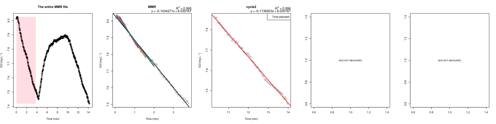
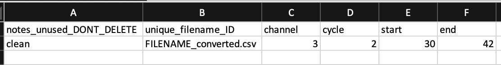
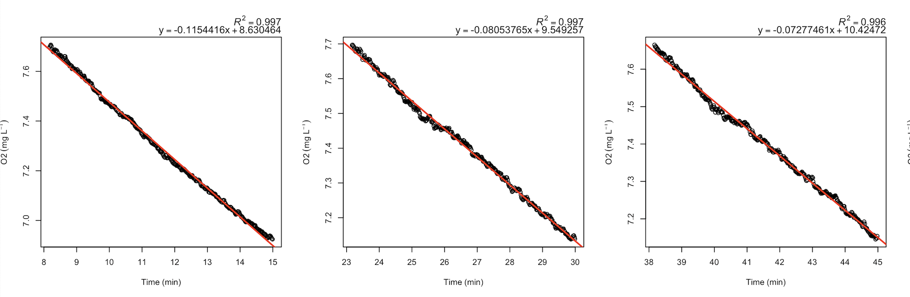
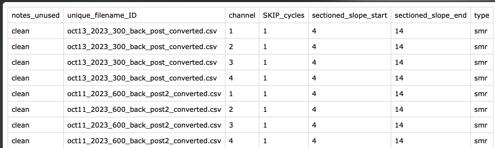
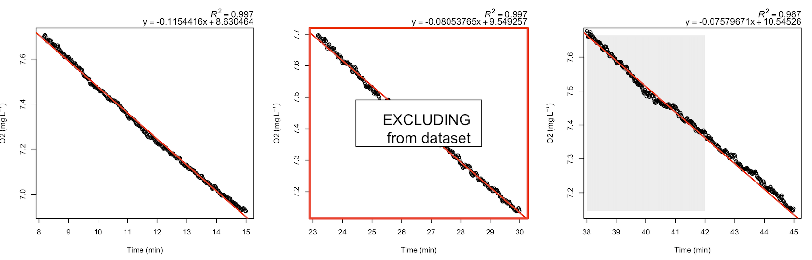
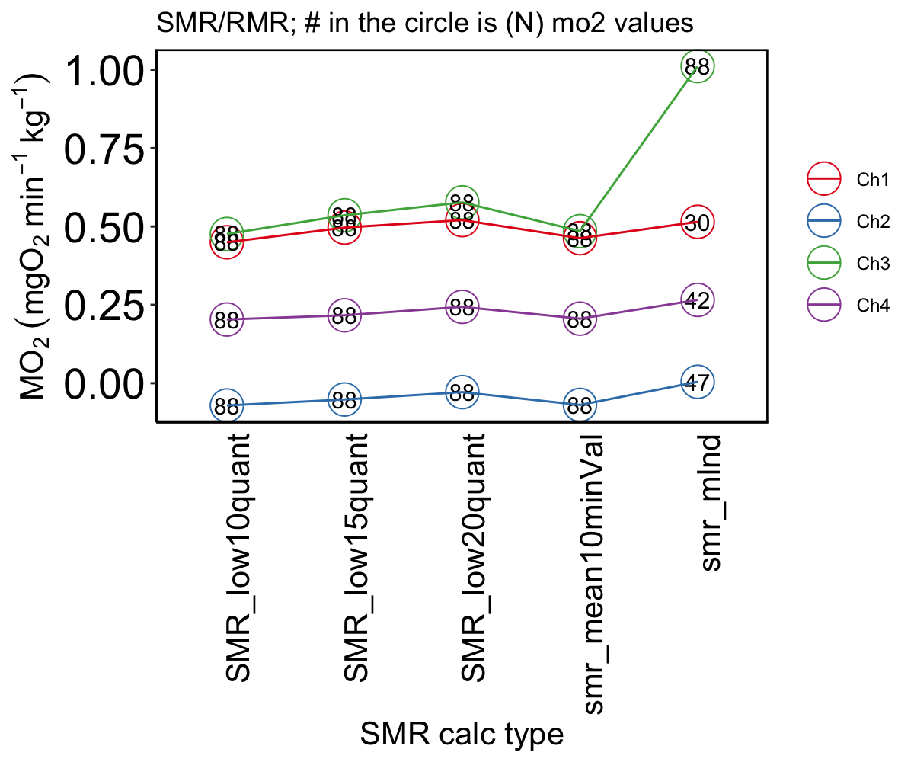

Step by step example of analysis
2024-02-15
Example_run.RmdSetup
1. (done once) Install Library
install.packages("devtools") # if devtools is not installed
devtools::install_github("kraskura/AnalyzeResp")
library(AnalyzeResp)2. (done once) Set up analysis working directory space
Using these functions, produce and save locally many .csv and .png files. Currently, there are two options:
- in the current working directory (folder on the user’s computer).
- in various folders automatically organised (suggested).
To setup the current working directory with all subfolders run the following code:
Note! Do not rename the folders. Much agreed that the names of these folders are not intuitive in the current version. Suggestions with alternative names for the export files, directories, and sub-directories are always welcome
Outcome

3. (done once) Transition from raw data .txt files to .csv files
The location of raw files: the root working directory. Then execute the code:
# For Witrox
textFileConvert(txt_file = "NAME_OF_RAW_TEXTFILE.txt",
local_path = FALSE,
type_file = "Witrox",
N_Ch = 4,
nrowSkip = 41, # witrox software 2023
convert_units = T,
units_from = "pct", # O2 units from % AS
units_to = "mg/L", # O2 units to mg/L
salinity = 0,
atm_pressure = 1)
# example for 'older' Firesting:
textFileConvert(txt_file = "NAME_OF_RAW_TEXTFILE.txt",
local_path = FALSE,
type_file = "Firesting_pre2023",
N_Ch = 4,
nrowSkip = 19, # pyroscience old software
convert_units = T,
units_from = "pct", # O2 units from % AS
units_to = "mg/L", # O2 units to mg/L
salinity = 0,
atm_pressure = 1)
# For Firesting after 2023 update
textFileConvert(txt_file = "NAME_OF_RAW_TEXTFILE.txt",
local_path = FALSE,
type_file = "Firesting_2023",
N_Ch = 4,
nrowSkip = 70, #
convert_units = T,
units_from = "pct", # O2 units from % AS
units_to = "mg/L", # O2 units to mg/L
salinity = 0,
atm_pressure = 1) The data files are in .txt (Firesting oxygen meter) or .csv (Witrox) format when in raw form. The functions in this package processes .csv files that contain values only relevant for the analysis (e.g., O2, temperature, time).
The MMR_SMR_AS_EPOC calculates metabolic rates in
mgO2 L^-1 kg^-1. When the oxygen level unit in the raw data
files is not mgO2 L^-1, it will require conversion.
- Common conversion: from air saturation % (AS%) to mgO2 L^-1
- The function depends on rMR::DO.unit.convert and is a modified
version of it.
- Similarly, also see similar modification: FishResp::conver.rMR
- This must be done on each file
- Suggesting writing a
forloop for efficiency (see code example below)
- Suggesting writing a
Outcomes:
The original non-modified .txt file remains in the current working directory. The .txt files can now be moved elsewhere as they are not used in any consecutive steps. The new file will have and extension ’_convereted.csv” and will be moved to csv_files folder.
Using MMR function
The following script is to obtain oxygen decrease rates over time during a user-specified measurement cycle. This code analyzes MMR in up to 4 individuals, each associated with one probe = channel in FireSting oxygen sensor (FireSting boxes).
If the MMR data file contains less than 3 min of data, the iterative “sliding window” analysis to find the steepest slope representing MMR measurement is not performed. Otherwise, it always calculates the regression parameters for the provided duration of the measurement.
1. First MMR analysis run
MMR(data.MMR = "NAME_OF_DATA_converted.csv", # specify the .csv data file
cycles = 2, # this file has two measurement (closed phase) cycles
cycle_start = c(0, 11.02), # first cycle start at 0 min, and 2nd cycle starts at 11.2 min (relative time of the file)
cycle_end = c(4.0, 15.95), # first cycle ends at 4 min, and 2nd cycle ends at 15.95 min (relative time of the file)
mmr_Ch1 = 1, # an animal in channel 1 has the MMR measured in the first cycle.
mmr_Ch2 = 2, # an animal in channel 2 has the MMR measured in the second cycle.
mmr_Ch3 = 1, # an animal in channel 3 has the MMR measured in the first cycle.
mmr_Ch4 = 2, # an animal in channel 4 has the MMR measured in the second cycle.
clean_Ch1=c(0,0), # channel specific timeframes for the MMR measurement
clean_Ch2=c(0,0),
clean_Ch3=c(0,0),
clean_Ch4=c(0,0),
local_path = TRUE, # this will automatically save output files in the dedicated output folders
N_Ch = 4, # 4 channel firesting, 1 temperature probe
inv.data = NA) # no inventory data to perform more detailed user-defined measurement adjustments. Outcomes:
plot 1.

- one figure produced per individual
- the first panel always has the full duration of the trend presented, and the shaded section shows the user-indicated MMR section
- the user-indicated MMR cycle plot, in this case, is the first
measurement cycle.
- The plot is labeled MMR (second panel)
- The colored slopes are the steepest i) 120 s (green), ii) 90 s (orange), iii) 60 s (purple); black regression is for a full duration _ regressions parameters of all full slopes are noted above the plot _ if any (not MMR) measurement cycle is adjusted using ‘inventory file,’ it will be indicated in the legend box (see third panel, cycle 2)
2. QC MMR (optional)
MMR inventory or channel-specific cleaning: What is it and how to use it? The ‘cleaning details’ are provided and outlined in csv file.

| Column | Description |
|---|---|
| notes_unused_DONT_DELETE | Column intentionally left blank for user notes. Do not delete |
| unique_filename_ID | A full filename as entered in the MMR function. |
| channel | The Number of the channel (1-4) |
| start | indicate the start time (minutes) of the measurement section to be KEPT; add 0 to discard this cycle. |
| end | indicate the end time of the section to be KEPT; add 0 to discard this cycle. |
Description from the example image above:
- Channel 3, not-MMR measurement cycle 2 needs to be time-adjusted.
- The entered filename is matching exactly the filename for the data file
- When
MMRfunction is applied to this file, the timeframe of usable data for channel 3, cycle 2 will be adjusted to start time at minute 30 and end at minute 40 (relative time in the data, assuming the file begins at time 0 min).
Notes:
- Be sure that the format of the inventory file is .csv and the inventory file is located in the root working directory (same location as MMR, SMR, … folders).**
- To clean actual MMR cycle (sliding slope section), use
MMRargumentsclean_Ch1, clean_Ch1, clean_Ch1, clean_Ch1as needed.
Now, run the code again with inventory file:
MMR(data.MMR = "NAME_OF_DATA_converted.csv", # specify the .csv data file
cycles = 2, # this file has two measurement (closed phase) cycles
cycle_start = c(0, 11.02), # first cycle start at 0 min, and 2nd cycle starts at 11.2 min (relative time of the file)
cycle_end = c(4.0, 15.95), # first cycle ends at 4 min, and 2nd cycle ends at 15.95 min (relative time of the file)
mmr_Ch1 = 1, # an animal in channel 1 has the MMR measured in the first cycle.
mmr_Ch2 = 2, # an animal in channel 2 has the MMR measured in the second cycle.
mmr_Ch3 = 1, # an animal in channel 3 has the MMR measured in the first cycle.
mmr_Ch4 = 2, # an animal in channel 4 has the MMR measured in the second cycle.
clean_Ch1=c(0,0), # channel specific timeframes for the MMR measurement
clean_Ch2=c(0,0),
clean_Ch3=c(0,0),
clean_Ch4=c(0,0),
local_path = TRUE, # this will automatically save output files in the dedicated output folders
N_Ch = 4, # 4 channel firesting, 1 temperature probe
inv.data = "NAME_OF_INV_DATA.csv") # no inventory data to perform more detailed user-defined measurement adjustments. Using SMR function
Two runs of SMR function for each data file may be
necessary.
- Parametrized run to get files for visual assessment of each measurement’s quality.
- Parametrized run to apply any time adjustments and cleaning, as decided after visual assessment of the data.
1. First run: A parametrized run of SMR without any
QC
SMR(data="FILENAME_SMR_converted.csv",
inventory_data=NA,
cycle_start=8, # length of the flush (min 0 - 8 relative time for each measurement cycle)
cycle_end=15, # length of a full cycle, with open and closed phases together
chop_start=10/60, # this will take the first 10 sec off as a waiting period. It can be decimal
chop_end=0,
N_Ch=4,
local_path=TRUE)The rate of oxygen decrease (O2 levels ~ time; e.g., mgO2 min^-1) for all automatically isolated measurement cycles.
From the example code above: + The full respirometry cycle
(flush:measure) length is 15 min long: cycle_end=15 +
8-minute flush: cycle_start=8 + None of the measurement
cycles will be modified or otherwise cleaned (no inventory data):
inventory_data=NA + The first 10 s from each measurement
(closed) will be discarded as “wait period” for water mixing:
chop_start=10/60 (see notes below)
An additional wait period can be used between the flush and measurement (flush:wait:measure) Rosewarne et al 2016, See Fig 3. In the provided example, the first 10 seconds would be equivalent to wait period and excluded from regression analysis.
Outcomes:
plot 2.

- A snapshot of three measurement cycles for a specific channel. There
are a total of 88 measurement cycles in a full example figure.
- One figure produce for each channel.
- Red line: linear regression slope
- Regressions parameters of all full slopes are noted above the plot
- Time is in relative scale, assuming the file begins at time 0
- File showing the recorded data all on one timescale
- panels top to bottom: Channel 1 O2 trend, channel 2 O2 trend, channel 3 O2 trend, channel 4 O2 trend, temperature trend (scale is set to 5- 35ºC)]
- in panels 1-4:
- solid red line: the mean O2 levels in the system during the trial
- the dashed line: the lowest reached O2 levels in the system during the trial
- if the Channel has no data, it shows as a straight line at zero
2. QC SMR (optional)
SMR inventory or channel-specific cleaning: What is it and how to use it?
Same as MMR, the cleaning details are provided through csv file.

| Column | Description |
|---|---|
| date | The date in 3-letter month + 2-number date (e.g. jun04, jan15, oct20, aug01… ). Important but inconvenient: excel tends to default to one of the data formats. Counteract that by typing the apostrophe before text: ’jun04 |
| SKIP_cycle | Add ‘0’ to clean the cycle, keep the times as specified in the next two columns. Add ‘1’ to delete the cycle, add times of the cycle that needs to be deleted in the next two columns. |
| sectioned_slope_start | indicate the start time (minutes) of the measurement section to be KEPT, write 0 to discard this cycle. |
| sectioned_slope_end | indicate the end time of the section to be KEPT, write 0 to discard this cycle. |
| type | add “smr” |
Now run the SMR function again. The only addition is the inventory data file (in .csv format). The inventory file must be in the root working directory.
SMR(data="FILENAME_converted.csv",
inventory_data= "smr_inventory_test.csv", # <<< Added after visual assessment of the data
cycle_start=8,
cycle_end=15,
chop_start=10/60,
chop_end=0,
flush_plot="OFF",
N_Ch=4,
path="UseFolders",
date_format = "m/d/y")Notes:
- No cleaning necessary for measurement cycle with low R2.
These measurement cycles will be automatically excluded using
MMR_SMR_AS_EPOCand setting desired R2 thresholds ensuring automatized consistency - Efficiency tip: writing and editing the inventory file in excel (.xlsx), transfer the necessary part to a new file in .csv
- The format date must be the same as written in the name of the .csv file.
- To exclude the cycle indicate start and end times for the slope as 0 0
- Most errors during cleaning are due to typos
Outcomes:
plot 3.

One figure for each channel is plotted again. This time with annotation adjustments according to the cleaning guidelines:
- grey shaded sections indicates the sections approved acceptable for further analysis, representative of animal O2 uptake rate measurement.
- red frame with a message: the measurements that are excluded entirely from the final data analysis
- orange frame: the measurements, not cleaned but has low R2, only used to bring awareness of to the quality or scatter of the data
3.Background respiration
If the background respiration was run on automatic repeat cycles
(similar or same as the overnight resting metabolic rate measurements),
it can easily be analysed using the SMR function
(parametrize it accordingly). Other possibility is to use
MMR function for custom cycle times.
If the background was run ocntinuous with no flushing, it can be
analyzed using SMR funciton; just be sure to make the flush
cycles really short (e.g., one minute)
Using MMR_SMR_AS_EPOC
1. Fully parametrized run
MMR_SMR_AS_EPOC(
data.MMR = "jul04_2019_opasize_box4_mmr_analyzed.csv",
data.SMR = "jul04_2019_opasize_box4_smr_analyzed.csv",
AnimalID = c("FISH1","FISH2","FISH3","FISH4"),
BW.animal = c(0.065,0.068,0.061,0.062),
resp.V = c(1.9,1.9,1.5,1.5),
r2_threshold_smr = 0.85,
r2_threshold_mmr = 0.9,
scaling_exponent_mmr = 1,
scaling_exponent_smr = 0.89,
epoc_threshold = 1.1,
drop_ch = 1,
recovMMR_threshold = 0.5,
plot_smr_quantile=10,
mo2_val_for_calc = "mo2_1kg", # options: "mo2_1kg", mo2_common_mass_kg, mo2_per_individual_kg
end_EPOC_Ch = c((4.5*60), NA, NA, (5*60)), # must match the N(channels), use NA otherwise, input in minutes
# mmr_type = "mean",
min_length_mmr = 120,
spars_levels = c(0.1, 0.3),
background_prior = "BAKCGROUND_DATA_BEFORE_MR_analyzed.csv" ,
background_post = "BAKCGROUND_DATA_AFTER_MR_analyzed.csv" ,
background_slope = NULL,
background.V = NULL,
MLND=TRUE,
match_background_Ch = TRUE,
mmr_background = "SAME_slope",
background_linear_gr = TRUE,
local_path= FALSE,
N_Ch = 4,
common_mass= 1) # in kgExamples and explanations for setting various parameter values from the code above:
- R^2 thresholds; regression slopes that are below these thresholds
are excluded.
- The regression R2 cut off is 0.9 for MMR
(
r2_threshold_mmr = 0.9) - The regression R2 cut off is 0.85 for SMR
(
r2_threshold_smr = 0.85).
- The regression R2 cut off is 0.9 for MMR
(
- Length of MMR measurement: The MMR value will be calculated from the
steepest 120-second slope (
min_length_mmr = 120).- If this length is not sufficient to keep the R2 at the chosen 0.9 level, it will automatically go to the next longer sliding window option (in this case, it would be 180 seconds).
- The goal is to keep R2 at above the set threshold while providing the longest possible MMR measurement period
-
epoc_threshold = 1.1: the time of full recovery will be estimated as the time it takes for the animal to recover from its MMR level to 110% SMR. (= 1.1 X SMR). -
recovMMR_threshold = 0.5: finds the time it takes and metabolic costs for the animal to recover from its MMR to 50% MMR (EPOC to 50% MMR and time to 50 % MMR) -
drop_ch = 1: channel 1 will be entirely excluded from the analysis -
scaling_exponent_smr = 0.89: scaling for SMR (all data.SMR) values will be corrected to common mass using 0.89 scaling exponent (default 1 kg, but can be specified usingcommon_massarg). -
scaling_exponent_mmr = 1: isometric scaling of MMR measurement -
end_EPOC_Ch = c((4.5*60), NA, NA, (5*60)): manually assigned time (minutes) it took an animal to recover, assigned to each channel individually (Channel-1 = 4.5 hours, channel-4 = 5 hours, not specified for channel-2 and channel-3). -
spars_levels = c(0.1, 0.3): the smoothing level for estimating recovery costs, the least smooth (0.1) and mildly smooth (0.3) trends will be plotted. The “spar” is unitless, somewhat arbitrary in that sense. - In this example, background respiration was measured before and after the trial, and these background files are provided (see step 4).
2. Minimally parametrized MMR_SMR_AS_EPOC run
MMR_SMR_AS_EPOC( data.MMR = "FILENAME_MMR_converted_analyzed.csv",
data.SMR = "FILENAME_SMR_converted_analyzed.csv",
AnimalID = c("ANIMAL1","ANIMAL2","ANIMAL3","ANIMAL4"),
BW.animal = c(0.065,0.068,0.061,0.062),
resp.V = c(1.890,1.890,1.4475,1.4475),
r2_threshold_smr = 0.85,
r2_threshold_mmr = 0.9,
min_length_mmr = 120,
local_path = FALSE)3. Other occasions and notes:
-
MMR_SMR_AS_EPOCcan be run only to estimate SMR. Specify,data.MMR = "none". See documentation -
MMR_SMR_AS_EPOCcan be run only to estimate MMR. Specify,data.SMR = "none". See documentation
Outcomes:
plot 4.
Metabolic rates across the duration of the experiment are particularly relevant when estimating recovery performance (EPOC and its relevant metrics).

- Figure identifier: “EPOC_PLOT.png”
- The Number of panels determined by values provided in the
spar_levelargument - The first measurement in this trend is MMR
- The blue line connects dots according to the selected smoothness
level (
spar_level) - The colored horizontal lines show the SMR estimates using 5 different methods
- The vertical lines
- Dashed pink: Time to 50% MMR
- Dashed grey: hourly marks (1, 2, 3, 4, 5 h into a trial)
- Colored lines (overlapping in the image): estimate time to EPOC according to different types of SMR
plot 5.
Metabolic rates across the duration of the experiment. This figure highlights the MO2 measurements used to estimate SMR/RMR, and find resting level metabolic rates.

- Figure identifier: “_SMR_PLOT_SMR_analyses”
- Plotted are two facet plots
- One facet for each channel
- Discarded channels are not plot plotted
- The channel ID is in the grey bar on the right side
- Top panel facet plot:
- Red symbols: 5 lowest values reported
- Green symbols: after excluding the lowest 5 MO2 values (in red) the lowest 10 MO2 values (i.e., the lowest 6-15 values)
- Bottom panel facet plot:
- Turquoise: the lowest 10th percentile MO2 values
- Turquoise + Blue: the lowest 15th percentile MO2 values
- Purple + Turquoise + Blue: the lowest 20th percentile MO2 values
plot 6.
The comparison of estimated SMR/ RMR values using different methods:

- Figure identifier: “SMR_PLOT_SMR_methodsALL.png”
- Channels are plotted in different colors
- Number in the bubble is the Number of MO2 values used for calculations
- SMR_low(n^th)quantile: the SMR value estimated as the mean of the lowest recorded values below nth quantile (10, 15, 20th quantile) (plot above, bottom panel, mean of colored values)
- SMR_mean10minValues: the mean of 10 min lowest MO2 values, after excluding the lowest 5. (Figure above, top panel, green symbols)
- SMR_mlnd: the SMR estimated following methods in Chabot et al 2016, the mean of lowest normal distribution
- For More information, see Chabot et al 2016, where each method to estimate SMR is described in detail.